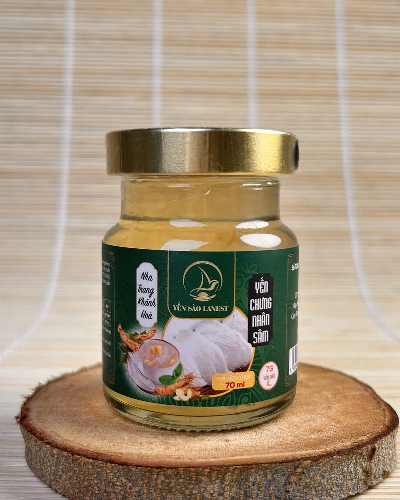
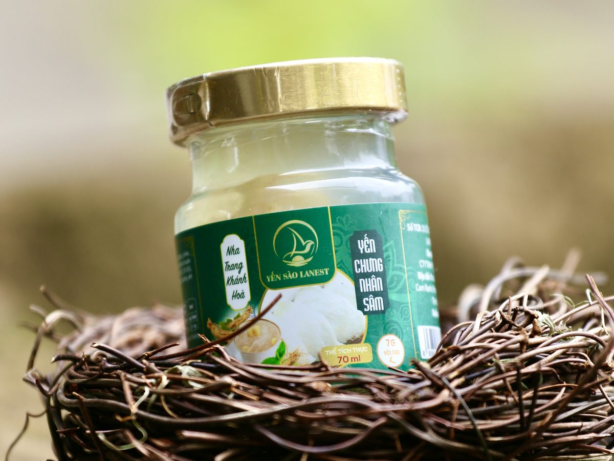

Yến Chưng Nhân Sâm: Trong Hũ Có Gì, Hợp Với Ai Và Cách Dùng
Yến Sào Lanest · Đăng ngày 13/11/2026

Trong 14 vị yến hũ của Lanest, yến chưng nhân sâm là vị "người lớn" nhất: nhãn xanh rêu đậm, uống vào có chút đắng nhẹ rồi mới ngọt hậu. Người mua vị này thường là anh chị làm việc nhiều bằng đầu óc, hoặc mua làm quà cho đối tác. Bài này nói rõ trong hũ có gì, 0,6g nhân sâm nghĩa là bao nhiêu, hũ hỗ trợ gì, hợp với ai và dùng thế nào cho ngon.
Hũ yến chưng nhân sâm 70ml, nhãn xanh rêu, ghi rõ 7G yến tươi
1. Yến chưng nhân sâm có vị thế nào?
Tài liệu giới thiệu sản phẩm của Lanest tả vị này là thanh ngọt xen lẫn vị đắng nhẹ đặc trưng của nhân sâm. Nói theo cách của người hay uống: ngụm đầu thấy ngọt thanh như yến đường phèn, cuối ngụm còn đọng lại chút đắng, chút thơm của sâm.
Ai chưa quen vị sâm có thể thấy lạ ở hũ đầu tiên. Cách dễ nhất là uống lạnh, vì nhãn sản phẩm ghi hũ ngon hơn khi uống lạnh. Ai thích vị yến nguyên bản, không có mùi thảo mộc, thì nên bắt đầu từ yến chưng đường phèn trước.
2. Trong một hũ yến chưng nhân sâm Lanest có gì?
Yến chưng nhân sâm thuộc dòng yến hũ 7g yến tươi, hũ thủy tinh thể tích thực 70ml. Thành phần theo danh sách sản phẩm đăng ký của Lanest, đúng thứ tự in trên nhãn:
| Thành phần | Ghi chú |
| Nước, yến tươi 7g | Phần chính của hũ |
| Đường phèn | Tạo vị ngọt nền |
| Nhân sâm 0,6g | Nguyên liệu tạo vị riêng của hũ |
| Collagen thủy phân, chất xơ inulin | Có trong các vị 7g dành cho người lớn |
| Chất điều chỉnh độ acid INS 327, 331(iii); chất ổn định INS 401, 407, 415, 466 | Ghi rõ mã trên nhãn |
| Hương yến tổng hợp | Ghi rõ trên nhãn |
Sản phẩm có số tự công bố 25/CÔNG TY TNHH YẾN SÀO LANEST/2025, ngày sản xuất và hạn dùng xem trên bao bì. Vì có phụ gia ghi rõ trên nhãn, Lanest không gọi dòng 7g là "100% yến". Muốn hiểu từng dòng chữ trên nhãn, anh chị xem bài cách đọc nhãn yến hũ.
3. 0,6g nhân sâm là nhiều hay ít?
Đặt cạnh các vị khác cùng dòng 7g sẽ dễ hình dung hơn:
- Long nhãn 2,9g trong hũ long nhãn; táo đỏ 2,7g trong hũ táo đỏ.
- Đông trùng hạ thảo 1,9g trong hũ đông trùng.
- Hạt sen 0,6g trong hũ hạt sen, ngang với nhân sâm.
- Saffron chỉ 2mg trong hũ saffron.
Nghĩa là nhân sâm được dùng ở lượng nhỏ, đi cùng 7g yến tươi. Hũ này vẫn là một hũ yến có thêm vị sâm, không phải sâm ngâm hay thang thuốc bổ. Người làm nghề như Lanest muốn khách hiểu đúng điều đó trước khi mua, để không kỳ vọng sai.
4. Yến chưng nhân sâm hỗ trợ gì?
Bản mô tả từng vị của Lanest ghi yến chưng nhân sâm:
- Hỗ trợ tăng cường năng lượng, cải thiện tập trung.
- Hỗ trợ giảm mệt mỏi, căng thẳng.
- Hỗ trợ tăng cường sức đề kháng.
- Hỗ trợ duy trì làn da và thể trạng khỏe mạnh.
Tất cả đều ở mức "hỗ trợ". Sản phẩm này không phải là thuốc và không có tác dụng thay thế thuốc chữa bệnh. Người đang điều trị bệnh, đang dùng thuốc dài ngày hoặc đang mang thai nên hỏi bác sĩ trước khi dùng thường xuyên, nhất là với các vị có thêm thảo mộc như nhân sâm. Bài ai không nên ăn yến có nói kỹ hơn phần này.

Hũ yến chưng nhân sâm đặt trên tổ đan trang trí, nhãn ghi rõ thể tích thực 70ml
5. Yến chưng nhân sâm hợp với ai?
Tài liệu sản phẩm ghi đối tượng của vị này là người làm việc trí óc, doanh nhân và người cần tăng cường năng lượng. Cụ thể hơn:
- Dân văn phòng, người hay họp hành, chạy deadline: một hũ để sẵn trong tủ lạnh, mở nắp là uống. Xem thêm bài yến chưng cho dân văn phòng.
- Người mua quà cho đối tác, khách hàng: tài liệu giới thiệu gọi yến chưng nhân sâm là món quà dành cho sức khỏe và phong độ. Doanh nghiệp chuẩn bị quà cuối năm có thể tham khảo bài quà Tết yến sào cho doanh nghiệp.
- Người đã quen vị yến, muốn đổi vị trong tuần, xen nhân sâm với saffron, hạt chia hay long nhãn.
Với trẻ nhỏ, nên chọn hai vị dành riêng cho trẻ em (không có collagen). Người cần hạn chế đường thì lưu ý hũ nhân sâm có đường phèn; khi đó nên xem hai vị dùng đường isomalt trong bài 14 vị yến chưng, chọn vị nào.
6. Dùng và cất yến hũ nhân sâm thế nào?
- Lắc nhẹ trước khi uống. Nhãn ghi hũ ngon hơn khi uống lạnh; ai thích uống ấm thì chưng cách thủy, không đun sôi trực tiếp.
- Chọn lúc bụng nhẹ: sáng sớm, hoặc buổi tối trước khi ngủ khoảng một tiếng. Không uống ngay sau bữa chính.
- Uống đều, không dồn. Người trưởng thành dùng khoảng 2–3 lần mỗi tuần là vừa, nhiều nhất 3–5 lần. Kiên trì đều đặn tốt hơn uống liền mấy hũ rồi bỏ ngang.
- Chưa mở nắp thì để nơi khô ráo, thoáng mát ở nhiệt độ thường. Đã mở nắp thì cất lạnh và dùng sớm. Không dùng khi thấy hũ có dấu hiệu lạ.
Cách cất cả thùng, cả hộp cho đúng có trong bài bảo quản yến hũ chưng sẵn.
Câu hỏi thường gặp
Yến chưng nhân sâm có đắng không?
Có một chút. Vị chính vẫn là thanh ngọt của yến và đường phèn, phần đắng nhẹ ở cuối ngụm là vị đặc trưng của nhân sâm. Uống lạnh thường dễ uống hơn.
Một hũ có bao nhiêu yến và bao nhiêu nhân sâm?
Mỗi hũ 70ml có 7g yến tươi và 0,6g nhân sâm, theo thành phần sản phẩm đăng ký của Lanest.
Trẻ em uống yến chưng nhân sâm được không?
Lanest không xếp vị nhân sâm cho trẻ em. Với các bé, Lanest có 2 vị yến chưng dành cho trẻ em (trẻ em và trẻ em hương dâu); bé có cơ địa đặc biệt thì hỏi bác sĩ trước.